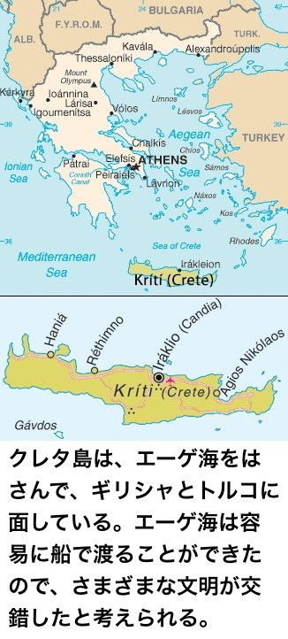

| アマチュア考古学者の勝利: マイケル・ベントリスと線文字Ｂの解読 (レトロハッカーズ) | |
| 牧野武文 | |
| Makino Takefumi (2013) | |
アマチュア考古学者の勝利
マイケル・ベントリスと線文字Ｂの解読
牧野武文
|
はじめに
学問の世界で大きな仕事をするには、才能と努力も必要だが、研究に費やすことのできる時間も重要だ。そのために、私たちの社会では大学や研究機関などの専門機関を作り、そこで学者たちの生活を保証し、時間のすべてを研究に注ぎこむ環境を用意している。
しかし、ときには、余暇の時間に趣味として研究を楽しんでいる素人が大きな仕事を成しとげてしまうことがある。紀元前１４５０年ごろのミケーネ時代のギリシャで使われていた線文字Ｂを解読したのは、考古学者ではなく、建築家のベントリスだった。彼は余暇として、クロスワードを楽しむかのようにして、学者がだれも成しとげなかった仕事をしてしまったのだ。
一般に、古代文字を解読するには、その文字を使っている文明に対する膨大な知識が必要となる。しかし、ベントリスは、ミケーネ文明に対する興味は薄かった。純粋に線文字Ｂを、あたかも暗号解読をするように解読していったのだ。
ベントリスの線文字Ｂの解読は、古代文字解読の歴史の中で、もっともエキサイティングな仕事といわれている。従来の考古学からは、まったく考えられない〝素人〟のベントリスが、まったく考えられないストレートな方法で解読してしまったからだ。
線文字Ｂの解読のストーリーを追いかけてみよう。
アマチュア研究者が解読した線文字Ｂ
コンピューターで使われている文字コードのユニコードについてはもう説明は不要だろうが、簡単にいえば「世界中で使われているすべての文字を収録する文字コード体系」のことだ。
ユニコードはこれで完成しているわけではなく、毎年のように改訂がおこなわれている。面白いのが古代文字がどんどん追加されていることだ。ゲルマン語の表記に使われていたルーン文字（現代でもアイスランドの一部では使われている）や中世のアイルランドで使われていたオガム文字などが収録されている。また、２００９年には、古代文字として有名なエジプトのヒエログリフ、中国の西夏文字なども追加された。今後も中国のトンパ文字などの追加が検討されていくことになるだろう。
ユニコードはおそらく現代の文字だけでなく、人類が生みだしたすべての文字を収録していく野望をもっているのだろう。このような古代文字を追加しているのは、古代文字研究のためだと思われる。というのは、まだ未解読の文字すら収録されているからだ。
もっとも有名なものでは、ファイストスの円盤文字がある。１９０８年にクレタ島のファイストス宮殿で発見された円盤に刻まれた象形文字で、何語で書かれているのかすらわかっていない。一部では、戦争の際の動員檄文 であるともいわれているが、確かなことはわかっていない。それでも、ユニコードには収録されている。
ユニコードの中に収録されている古代文字の中で、もっともドラマチックなのは線文字Ｂだろう。１９００年にクレタ島のクノッソス宮殿で発見された粘w土板に刻まれていた文字で、同時に線文字Ａと呼ばれる文字が刻まれた粘土板も多数見つかった。
そもそもこの粘土板が見つかったこと自体、奇跡に近かった。線文字Ａ、線文字Ｂを使っていた古代人たちは、粘土板に文字を刻んでいた。粘土板はいかにていねいに保存をしても、乾燥し、少しのことで崩れて、砂に戻ってしまう。エバンズがクノッソス宮殿で大量の粘土板を見つけることができたのは、宮殿が火災にあい、粘土板が焼かれ、焼き物と同じ状態になったからだった。

線文字Ａと線文字Ｂは字形がよく似ていたが、粘土板の時代も線文字Ａのものが古く、同じ言語とは思えなかったため、発見者のアーサー・エバンズは古い方を線文字Ａ、新しい方を線文字Ｂと名づけた。ところが解読は難航し、解読は不能とまでいわれた。

この線文字の解読は、ヨーロッパの文明を理解するうえできわめて重要だった。ヨーロッパの文明の源は古代ギリシャにあり、それを受け継いだローマ帝国がヨーロッパ各地に文明を伝播した。
私たち日本人が「いったい日本人はどこからきたのか？」というテーマに強い関心があるように、ヨーロッパ人にとってギリシャの文明を探索することは自分の出自を知ることでもあるのだ。有名なハインリッヒ・シュリーマンが、子供のころ読んだギリシャ神話に登場する都市トロイア（イリオス）の遺跡発掘に情熱を捧げたのも、それがヨーロッパ文明の源であるからだ。
シュリーマンが発掘しようとした叙事詩『イーリアス』の時代は紀元前１２００年ごろのものだった（しかし、後にシュリーマンが発掘したトロイア遺跡は、それよりももっと古く、紀元前２５００年前のものだと判明した）。しかし、地中海沿岸には、このトロイア文明の以前に、独立した文明が存在することがわかってきた。
考古学者アーサー・エバンズは、その〝トロイアよりも古い〟ミノア文明とミケーネ文明の発掘をおこなった。ミノア文明はクレタ島のクノッソスが中心で、クノッソス宮殿からは装飾品などの遺物だけでなく、線で構成された文字を使ったタブレットが発見された。エバンズはこれを「線文字Ａ」と名づけた。この線文字Ａを使っていたミノア文明は、今日では紀元前２０００年ごろと推定されていて、シュリーマンの『イーリアス』の時代よりも８００年も古い（と、当時は推定された）。
同時に見つかった線文字Ｂは、線文字Ａと形はよく似ていたが、明らかに別の文字であることがわかり、これは今日ではペロポネソス半島のミケーネを中心を栄えたミケーネ文明のものであることがわかっている。ミケーネ文明は紀元前１５００年ごろと推定され、『イーリアス』の時代よりも３００年古い（と、当時は推定された）。

つまり、ヨーロッパ人が自分たちの文明の起源であると考えている古代ギリシャよりも古い文明が、ギリシャと目と鼻の先にあったのだ。当然、ミノア文明とミケーネ文明は、古代ギリシャに大きな影響を与えていて、このふたつの文明こそがヨーロッパ文明の大元なのではないかとも考えられるのだ。
このトロイア文明、ミノア文明、ミケーネ文明の３つは、まとめてエーゲ文明と呼ばれることもある。エーゲ文明はいずれも青銅器文明だった。ところが、この３つの文明は紀元前１２００年ごろ、こつ然と消滅する。「紀元前１２００年のカタストロフ」と呼ばれる現象で、以降、文明と呼べるものがない時代が続き、紀元前７００年ごろ、鉄器を用い、ポリス（都市国家）を築いた古代ギリシャ文明の時代となる。紀元前１２００年になにが起こったのかは、いまだに多くの議論があるが、要は先端技術である鉄器製造を習得した民族が、エーゲ海地域に侵入をして、旧技術である青銅器のエーゲ文明が滅ぼされたのだろうという点は一致している。
ちょうど、日本人にとっての邪馬台国と大和朝廷の関係に似ていて、私たちの文明、文化の起源は大和朝廷に求められるだろうが、それ以前の邪馬台国からも大きな影響を受けていることは間違いないだろう。
その〝前ギリシャ文明〟ともいえるエーゲ文明から文字が記録された遺物が見つかった。これを解読して、なにが書いてあるかを知ることは、ヨーロッパ人にとってきわめて重要なことだった。
もうひとつ、線文字には興味ぶかい特徴があった。それは象形文字と表音文字の両方が使われていることだ。
象形文字は、漢字やエジプトのヒエログリフのように、１文字でモノや概念を表したものだ。たとえば、漢字の「日」「月」は、もともと太陽と月の絵を抽象化したものだ。この抽象化が進むと、字形はよりシンプルになって、その文字がもっている元々の意味を離れ、〝音〟を表すようになる。これがアルファベットだ。日本のひらがなもアルファベットの一種（厳密には、ひらがなは１文字で子音と母音を表すので、アルファベットではなく音節文字と呼ばれる）で、ひらがなの「さ」の元々は「左」という漢字だった。「左」はナの部分が左手の象形文字で、それに工という「仕事をする」という意味の象形文字が組み合わされている。「右手の仕事を助ける側の手」という意味だという。これが単純化されると、音だけが使われ、左とはなんの関係もない「さ」という音に使われるひらがなの「さ」という表音文字が生まれた。英語のＡも元々は牛の顔を表した象形文字だという説がある（逆さにすると、確かに牛の顔に見えなくもない）。
このように文字の進化というのは、そのものを表した絵から始まって、象形文字になり、それが抽象化されて、元の意味から離れた表音文字になる。そういうプロセスを経るのかもしれない。
だとしたら、線文字Ｂは、この点でも興味深いものだった。線文字Ｂには、明らかに象形文字と思われる文字と、明らかに表音文字にしか見えない抽象化されたアルファベットが混在していたのだ。ひょっとしたら、ミケーネ文明の時代に文字は象形文字から表音文字に進化したのかもしれない。
この点でも線文字Ｂの解読は重要だったのだ。しかし、線文字を発掘したエバンズは、いくつかの基本的な考察をおこなったが、解読にいたることはできなかった。
そこへ登場したのが、今回の主人公であるマイケル・ベントリスで、ベントリスは専門の考古学者や言語学者ではなく、建築家で、古代文字の研究は趣味にしかすぎなかった。そのベントリスが１９５３年に線文字Ｂを鮮やかに解読してしまったのだ。要するに、アマチュアの古代文字マニアが、専門学者をだし抜いて解読に成功したというわけだ。ベントリスはアマチュアである分、従来の学説にとらわれず大胆な発想をしたことが解読のきっかけとなった。古代の文明を研究し、文字を解読するというのではなく、まさに暗号解読のように統計的な手法と大胆な直感で、解読をしていった。今回は、線文字Ｂの解読ストーリーを追いかけていってみよう。
語学の天才、線文字Ｂに出会う
ベントリスは一種の言語の天才だった。もちろん、天賦 の才があったのだろうが、幼いときの生いたちが大いに関係している。
ベントリスは１９２２年７月 12 日にイギリスで生まれ、父親は英国陸軍の将校だったので、母国語は英語である。
しかし、ベントリスが５歳になるころ、父親が結核の療養をするためにスイスに移住し、ベントリスはスイスにある寄宿舎学校に通うことになる。この学校での公用語はフランス語とドイツ語で、ベントリスはこの２つの外国語をすぐに理解するようになった。それだけではなく、スイスの街中ではスイス方言のドイツ語が使われており、これもベントリスはマスターしてしまう。さらに、ベントリスの母親はポーランド人とイギリス人のハーフだった。その影響からか、６歳のころから母についてポーランド語を学ぶようになる。つまり、小学校を卒業するころには、５カ国語をマスターしていたということになる。
成人してからも、ヨーロッパの言葉であれば数週間学ぶだけでマスターしてしまったという。ヨーロッパの言語はほとんどが類縁関係にあって、文法はほぼ似たようなもので、つづり方のクセや特有の発音を覚えてしまえば読み書き、日常会話ができるようになるとはいえ、驚異的な才能だ。
といっても、イギリスに戻って学生生活を続けるベントリスはとくに目立った存在ではなかったようだ。成績はいい方だったが、卒業後もベントリスと交遊をもった同級生はまったくいない。学生時代の知りあいで卒業後も連絡をとりあった唯一の人物は、古典の教師ハンターだけだった。
後年、同級生たちは「ギリシャ語がほんとうのギリシャ人ではないかと思うほどよくできた」「自分の興味に夢中なようで、夜遅くまで本を読んでいた」と回想していることから考えても、同級生たちから嫌われていたわけではないだろうが、いつも同級生たちの賑やかさからは一歩引いたところに佇 んでいるような少年だったことは確かなようだ。
このようなおとなしいが才能を秘めた少年の内面が、外に向かって発揮されるきっかけになったのが１９３６年 10 月、ベントリスが 14 歳のときにおこなわれた学校での校外学習だった。ベントリスが尊敬しているハンター教師の引率で、ギリシャとミノアの美術展覧会の見学がおこなわれた。
このとき、会場にたまたまいわせたのが線文字Ｂを発見した考古学者アーサー・エバンズだった。エバンズはすでに 85 歳になっていたが、若い学生の集団を見かけると大歓迎し、自ら展示品を案内し、説明を加えていった。そして、線文字Ｂが刻まれた粘土板の前にくると「いまだにこの粘土板の文字を読めるものはいないのだ」といった。すると、若い学生たちの集団の中ですっとんきょうな声をあげるものがいた。
──ベントリスだった。ベントリスは「この粘土板はまだ解読されていないと、今おっしゃいましたね？」と大きな声で尋ねた。ここからベントリスの線文字Ｂの解読作業が始まった。
〝象形文字の罠〟にはまった第一人者
線文字Ｂを解読したのはベントリスだが、もちろん先人たちがみなお手あげ状態にあったわけではない。とくに発見者であるエバンズは、かなりのところまで解読作業を進めていた。しかし、発想の飛躍ができずに袋小路に入りこんでいたのだった。
エバンズは、粘土板に書かれた線文字Ｂの文章にはひんぱんに短い縦棒が現れることにすぐに気がついた。この縦線はだれもが想像するように、単語の区切り、または文章の区切りだとエバンズは考えた。
さらに、エバンズは数の表記に関しては、ほぼ完全に解読をした。
なぜ数字の解読ができかたというと、線文字Ｂの粘土板は日常の商行為に使われていたものも多く、納品書のようなものがあったからだ。品物の名前があって、横に数量が記載されている。しかも、中には数量の合計を記載しているものもあった。
また、線文字Ｂにはアルファベットのような文字と象形文字が混在して使われていた。商品目録のような粘土板には、商品が象形文字で記載されていた。
このような象形文字を見れば、それがなにを表しているかはだいたい推測がつくだろう。ある意味、子供でも象形文字がなにであるかを類推できるかもしれない。いや、むしろ子供の純粋な目の方が象形文字が表している意味を正確に把握できるのかも知れない。大人はさまざまな事情で、悪意がなくても、象形文字を自分の都合のいいように解釈してしまうことがあるからだ。これを古代文字研究の世界では〝象形文字の罠〟と呼ぶそうだ。
エバンズもこの象形文字の罠にはまってしまい、袋小路へと入りこんでしまった。
エジプトのヒエログリフでは、さまざまなマーカー文字が使われる。たとえば「ツタンカーメン」という王の名前を記述するとき、名前の部分をカルトゥーシュ（フランス語で薬莢の意味）と呼ばれる枠線で囲み、しかもその前に「太陽神ラー」という言葉をつける。こうすることで、王の名前に対する尊敬を表すとともに、王の名前が見つけやすくなるのだ。
エバンズは、線文字Ｂの粘土板にたびたび現れる文字が、このようなマーカー文字ではないかと考えた。
次図の上の文字を、ミノア文明でよく使われた双頭の斧の象形文字ではないかとエバンズは考えた。この斧は宗教儀式で用いられたと考えられたので、宗教者や宗教に関係する単語の前につけられるマーカーではないかと考えたのだ。
次図の下の文字は、王座と笏 の象形文字ではないかと考えた。当然、王族に関する言葉の前につけらえるマーカーではないかと考えた。
確かにこのふたつの文字は、象形文字のように見え、斧や王座を表しているようにも見える。しかし、これこそが〝象形文字の罠〟なのだ。このふたつは、実はただの音節文字であり、斧に見える文字は「ア」という音を表し、王座に見える文字は「オ」という音を表している。
この〝象形文字の罠〟については、考古学者の間で、次のようなジョークがあるという。現代から数万年後、現代の自動車の運転マニュアルが発掘された。それを調査した未来の考古学者は、「Ｏ」は車輪、またはハンドルを表し、「Ｈ」はシフトギアを表し、「Ｖ」はエンジンを表していると結論づけたというものだ。
エバンズのこの誤りがはっきりしたのはエバンズの死後のことであり、エバンズはここから袋小路へとはまりこんでいく。
といっても、エバンズが無能で感の悪い考古学者だったわけではない。それどころが、ベントリスが登場する前は線文字Ｂの第一人者であり、エバンズのこの推測は他の多くの学者からも支持されていたのだ。
エバンズの馬。キプロス文字との類似
線文字Ｂの解読がむずかしいのは、それがいったいどんな言語の文字なのかが謎であることで、これが確定できれば、あるいは確定できなくても非常に近い関係にある言語が特定できれば、解読は峠 を越したといっても過言ではない。
たとえば、古事記のような万葉仮名を使った書物があったとする。万葉仮名とは、ひらがなが成立する以前の日本の文字の表記法で、ひとつの音を漢字の音を借りて表す。たとえば「夜麻登波久爾能麻本呂婆」という万葉仮名があったとしよう。現代語しか知らない日本人にとってはいったいなにが書いてあるのか解読不能だろう。また、漢字の本家である中国人にとっても意味がまったくわからないはずだ。
しかし「ここで使われているのは古い日本語である」という情報があれば、日本人には「やまとはくにのまほろば」と読めるのだ。線文字Ｂでも使われている言語がどんなものであるかが判明すれば、あとは相当な速度で解読していくことができる。
線文字Ｂは何語なのか。多くの学者は古いギリシャ語であると考えていた。ギリシャの地で発見された粘土板なのだから、古いギリシャ語に決まっているという安直な発想だった。
それに真っ向から反対する学者が一人だけいた。第一人者エバンズである。エバンズはクレタ島のミノア文明の芸術的な特徴は、ギリシャ本土のミケーネ文明とは異質なものであり、ミノア文明の方が年代が古いことから、ミノア文明圏で使われていた言語はギリシャ語とは異なる言語で、しかもギリシャ語よりも古い言語であると考えていた。
では、線文字Ｂは何語なのだろうか。言語的な関係はともかく、線文字Ｂと字の形がよく似ている言語はいくつか知られていた。それはもちろんのこと線文字Ａであり、そしてキプロス文字がよく似ていた。年代的に並べれば、まず始めに線文字Ａができ、さらに線文字Ｂが生まれ、線文字Ａ、または線文字Ｂからキプロス文字が生まれてきたと考えられる。キプロス文字を、線文字Ｂと比べると、よく似た文字が多数見つかり、とくに数字に関してはほぼ同じだった。
この３種類の文字の中にはよく似た形の文字が多数でてくる。といっても、言語そのものも似ているとは限らない。たとえば、日本語と中国語は文字はよく似ているが、言語としては似ても似つかないものだ。簡単な話で、日本がたまたま近くの国の文字であった漢字を借りて使っているからだ。キプロス文字、線文字Ａ、線文字Ｂもまったく同じ関係で、言語としてはまったく違うものの文字だけを借りた関係であるかもしれない。
では、キプロス文字を研究してみることは、線文字Ｂの解読にとってまったく役に立たないのだろうか。そんなことはない。たとえば、漢字の「愛」は中国でも「アイ」と呼ばれ、日本語とまったく同じ音だ。「天気」は「ティエンチー」であり、「電脳」はディエンナオである。まったく同じ音ではないが、文字を借りるということは両者を行き来した商人や学者、宗教者などが伝える例が多く、音も似たものになる傾向がある。だとすれば、キプロス文字と線文字Ｂでよく似た形の文字は、音もよく似ている可能性が高い。
しかも、都合のいいことに、キプロス文字は１８７１年には一部をのぞいて解読されていた。なぜなら、古代ギリシャ語とキプロス文字が併記された粘土板が多数見つかっていたからだ。このバイリンガルなタブレットを元に、キプロス文字は多くの文字の読み方がわかっていた。
もし、線文字Ｂとキプロス文字で形の似ている文字が同じ読み方をするのだとすると、それは線文字Ｂの解読に大いに役に立つだろう。
エバンズは、この関係を頭に入れながら、粘土板を見ていき、馬の絵の象形文字の横に記された線文字Ｂの文字に注目した。おそらくは馬の数を数えた集計表か、商人が馬を納品したときの納品書のたぐいだろう。
この文字はキプロス文字によく似ていて、キプロス文字ではpo-loという音になる。面白いことに古いギリシャ語では馬のことをpolosという。みごとな符合だ。
このような例がいくつも見つかれば、クレタ島のミノア文明では古いギリシャ語が話され、それを書き記すのにキプロス文字によく似た線文字Ｂを使っていたということになる。エバンズを始めとした線文字Ｂの研究者たちは、目の色を変えて、線文字Ｂの粘土板の中からギリシャ語の痕跡 を探そうとした。しかし、見つかるのはギリシャ語とはそぐわない証拠ばかりだった。エバンズは再び袋小路に陥ってしまったのだ。
18 歳で線文字Ｂと決別し、建築家へ
線文字Ｂ解読の第一人者であるエバンズが、袋小路の中でもがいているころ、ベントリスは建築学に興味をもち、ロンドンにあるＡＡスクール（建築家協会建築学校）に進学していた。ベントリスは熱心に芸術や建築学の勉強に励んでいたが、夜になるとベッドの中で古代文字に関する文献を読みあさる習慣は続いていた。
そして、 18 歳のとき、大胆にも第一人者のエバンズに手紙を書いた。もちろん、ファンレターの類いではなく、線文字Ｂで使われている未知の言語は、何語に近い存在なのかということを論じた手紙だ。
ベントリスは豊富な言語の知識から線文字Ｂに使われているのは、イタリア中部で過去に使われていたエトルリア語に近い言葉ではないかと推測していた。エトルリア人は、元々はクレタ島から生まれた民族だという説があったからだ。しかも、線文字Ｂと関係が深そうなキプロス文字には、子音ｂ、ｇ、ｄを表す文字がなかった。これはエトルリア語とも共通した特徴だったのだ。
しかし、決定的な証拠はなく、ベントリスの直感でしかなかった。そこで、ベントリスは線文字Ｂで書かれているのがエトルリア語であるという証拠集めにかかった。
ベントリスが最初に試みたのは、エバンズと同じように、線文字Ｂの中からキプロス文字に似た文字を拾いだし、それをキプロス文字の読み方で読んでみることだった。先ほどの馬＝poloの例とまったく同じで、その意味では他の多くの線文字Ｂ研究者たちと同じ手法をとった。
唯一違っていたのは、人名と推測される線文字Ｂの単語に集中して作業をおこなったことだ。すると、Vilieという女性の名前が見つかった。これはエトルリア語特有の人名である。つまり、クレタ島で話されていたのはエトルリア語ではないか。そういう内容の手紙をベントリスはエバンズに送った。
さらに、半年後、ベントリスはこの考えを論文にまとめ、アメリカの有名な考古学学術誌「アメリカ考古学ジャーナル」に投稿する。ベントリスはもちろん考古学界では無名の存在だったが、論文の内容がよかったのか、『ミノア語序説』というタイトルで掲載された。「ミノア語」というのは、ミノア文明、つまりは線文字Ｂで使われている言語に仮につけた名称だ。
そして、ベントリスはエバンズに再び手紙を送る。専門誌に投稿をしたことを告げ、「もうこれ以上、このことに時間をかけてはいられなくなりました。これからは建築に専念するつもりです」と宣言した。
実際、ベントリスは忙しかった。建築の勉強もまだやるべきことはたくさんあったし、さらに２歳年上のロイス・ノックスニベンという美しい女性と恋に落ちた。同じ建築家を志す仲間で、１９４２年４月にロンドンで婚姻届をだした。
ところが、数ヶ月後、ベントリスに召集令状が届き、パイロット訓練兵として英国空軍に入隊することになる。軍隊では訓練に忙殺され、唯一の自分の時間である消灯後のベッドの中では、線文字Ｂの研究ではなく、妻とやがて生まれてくる子供と住むための家の設計をしていたという。
おそらく、ベントリスは線文字Ｂの研究は、青春時代の趣味であり、ひとつの成果をあげたことで卒業し、建築家として、家庭人として生きていこうと考えていたのではないだろうか。
しかし、線文字Ｂの方がベントリスを手放さなかった。線文字Ｂ研究の第一人者であったエバンズが亡くなったのだ。エバンズは１６００枚の粘土板と１４００個の粘土板の断片という大量の線文字Ｂ粘土板を所有していたが、その大部分を非公開にしていて、公開されたのは２００枚程度にすぎなかった。これがエバンズが第一人者でいられた理由のひとつでもある。
エバンズの遺言執行者のジョン・マイヤーズはオックスフォード大学の古代史学科の教授で、エバンズの線文字Ｂ粘土板を公開し、出版することに決めた。しかし、出版までには時間がかかることから、マイヤーズは優れた研究者に個別に閲覧を許可しようと考えた。それに選ばれたのがベントリスだった。
マイヤーズはベントリスとの面識はなかったが、アメリカ考古学ジャーナルに掲載されたユニークな論文のことを覚えていて、その執筆者であるベントリスに粘土板を見ないかと誘いをかけたのだ。ベントリスは飛びあがるほど喜んだが、空軍に勤務している最中ですぐに見にいくことはできない。
第２次世界大戦が終わり、空軍を退役したベントリスは、帰宅すると、ソファを暖める間もなくオックスフォード行きの汽車に飛び乗った。線文字Ｂの粘土板を見るためである。一度、終えようとした線文字Ｂの研究がベントリスの中で再び燃え始めたのだった。
待っていたのは、線文字Ｂ粘土板の模写の仕事だった。マイヤーズ教授は、ベントリスに模写の仕事をしてもらい、それを出版しようと考えたのだ。ベントリスは快く引き受け、そのままいけばベントリスはマイヤーズたちの研究グループに属して研究生活に入っていたかも知れない。
しかし、ベントリスはこの仕事を途中で放りだしてしまう。その理由は謎だ。ひとつには、戦争が終わりようやく妻と子供と暮らせる環境になったのに、模写の仕事を続けるには長期間単身でオックスフォードで暮らさなければならないことがあったようだ。
また、マイヤーズたちとベントリスの間では学説や解釈、その研究手法に大きな違いがある。ベントリスは自分のやり方で、自分の学説を展開したかったのかも知れない。また、単純にベントリスとマイヤーズはソリが合わず喧嘩別れをしたのだという話もある。いずれにしろ、ベントリスはこの一件で再び線文字Ｂの研究から離れ、建築家としての仕事に専念をするようになる。
コーバーのトリプレットとグリッド
マイヤーズたちは、大量の粘土板を使って、ベントリス抜きで線文字Ｂの研究を進めていった。その中でも成果をあげたのが、アメリカの考古学者アリス・コーバーだった。コーバーはベントリスがするはずだった粘土板の模写の仕事を引き継ぎ、そこからさまざまな研究成果をあげていった。
もっとも有名なのが「コーバーのトリプレット」と呼ばれる発見である。言語には、その文法から「屈折語」「孤立語」「膠着 語」と呼ばれる分類ができる。言葉はむずかしいが実に単純なことだ。goとgoes、goingのように主語に合わせて語形変化をする言語が屈折語（単語が途中で屈折するから）で、「ハックする」「ハックした」のように「ハック」という単語は変わらずに、それにくっつく助詞によって意味が変わってくるのが膠着語、中国語のように語形変化がないのが孤立語だ。もちろん、きれいにすべての言語がこのように分類できるわけではない。英語は屈折語、日本語は膠着語、中国語は孤立語と分類できるが、とくに英語は膠着語や孤立語の性格もあわせもっている。
コーバーはたくさんの粘土板の中から、語形変化をしている言葉をいくつも発見した。語形変化の多くは２種類あり、元々の単語と合わせて３つ組になる。
これらの単語が名詞か動詞かはわからないが、仮に動詞だとすれば英語の現在形、過去形、過去分詞のような語形変化があるということだ。あるいは名詞だとしたら、男性名詞、女性名詞、複数形のような変化かもしれない。
コーバーはここからさらに分析を続けていく。たとえば、コーバーのトリプレットが、英語でいうこのような語形変化だったとしよう。
tibet canada
tibe-ti-an cana-di-an
tibe-ti-ans cana-di-ans
ここで語尾のan、ansは共通しているので、どちらも当然ながら同じ文字が使われる。実際にコーバーのトリプレットも語尾には同じ文字が使われている。面白いのはその前のtiとdiである。ここは子音は異なるが母音は同じである。同じジャンルの単語が同じ語形変化をするときは、規則的な変化をするのが屈折語の特徴だ。
つまり、コーバーのトリプレットにあるtiとdiの位置にある線文字Ｂの文字も、母音が同じで子音が異なるだけである可能性がある。いずれにしても似た音になることは確かだろう。コーバーはこのように似た音になる可能性のある文字を関連づけて一覧表にまとめる作業をしていったのだ。
これをコーバーは「仮の音声パターン」と名づけた。ただし、このようなアプローチはコーバーの独創ではなく、 19 世紀にも楔形 文字の解読などでも使われたもので、研究者たちは「グリッド」と呼んでいる。
これは、ひらがなの五十音表のようなもので、縦に子音、横に母音を並べて、表の中に文字を入れていく。たとえば、ひらがなで説明すると、コーバーのトリプレット（語形変化）から、「かきくけこ」の五文字が「子音は同じだが、母音は異なる」という情報がわかる。すると、この「かきくけこ」の五文字は、グリッドの同じ子音の欄にまとめておくことができる。そこで、他の情報から、このどれかの文字の子音がｋであることがわかれば、「かきくけこ」はすべてグリッドのｋの欄に置くことができる。
グリッド全体を見渡しながら、矛盾がないようにパズルを解くようにして、すべての文字の子音と母音を決めていくのだ。ベントリスも着目点は、コーバーとは異なるものの、基本的にはこのようにして「グリッドを埋めていく」という手法で、線文字Ｂを解読していった。
線文字Ｂの解読に専念するベントリス
さて、ベントリスはその間、建築家としての資格をとり、英国文部省に採用されて、学校校舎の設計部門で働いていた。若い建築家として着々と実力をつけていくベントリスは、それでも昼休みになると建築以外のことに時間を費やした。当時の同僚によると、昼休みにはよく証券会社に電話をしていたという。ベントリスは株の売買に熱中していたのだ。同僚は、ベントリスが「今日は電話一本で、年収分稼いだよ」と話しているのを記憶しているという。
もうひとつ、ベントリスの昼休みの楽しみが、線文字Ｂの粘土板の写しを見ることだった。ベントリスは線文字Ｂのことを忘れてはいなかったのだ。もちろん、コーバーの成果などについても知っていた。
そして、ベントリスは１９４９年の年末に、突然面白い試みを実行に移す。それはエーゲ文明の言語と文字の世界的な研究者 12 名を選んで、質問状を送付したのだ。それは「線文字Ｂはどのような言語で、既知のどんな言語と関係があるのか」など、線文字Ｂに関する 20 の質問で、回答をしてくれた学者には、すべての回答を整理し直し、再配布するというのだ。いわばメーリングリストのようなものを立ちあげたわけだ。
ベントリス自身は「国際協力による面白い実験」と呼んでいるが、このようなことはベントリスでなければできなかっただろう。当時の学者は秘密主義で、情報を提供することは自分が損をするだけでしなかない。エバンズが線文字Ｂの粘土板の多くを非公開にしていたのも、一人で独占するためだった。仮にエバンズと親しい研究者が、その粘土板を見ることを許され、写しをとることも許されたとしても、その写しに基づいた研究成果を発表するには、事前にエバンズの許可を得るのが礼儀とされていた。
もし、ベントリスが 12 人の学者にただ意見を聞くだけの質問状を送ったとしたら、ほとんどの学者は無視したことだろう。素人の建築家なんぞに、自分の飯の種である情報をただ教えてやる必要はないのだ。
しかし、その回答結果が冊子にまとめられて再配布されるとなれば話は別だ。他の学者の意見を自分も知ることができるし、なにしろ線文字Ｂの研究はコーバーをのぞけばまったく進まないお手上げ状態になっていたのだ。その第一人者であるコーバーも病にかかり体調を崩し、研究はほとんどとまっていた状態だ。 12 人の学者にとっても、この質問状の回答は喉から手がでるほど読みたい情報だったのだ。
さらに、 12 人の学者は世界中に散らばっており、母国語も英語以外にフランス語、ドイツ語、イタリア語、スウェーデン語などで、質問状の回答ももちろんばらばらな言語で返ってくる。これを英語に翻訳し、冊子にまとめるという作業を一人でもできるのは、語学の天才であったベントリスぐらいのものだ。
12 人のうち、回答を返さなかった学者は２人だけだった。１人はプラハの学者で、専門がヒッタイト語で最近線文字Ｂの論文も発表したが、ほとんど評価されず、線文字Ｂの世界から去っていった人だ。線文字Ｂについてはほとんど興味を失っていたのだろう。もう１人、回答しなかったのがコーバーだった。
コーバーはこう回答してきた。「質問に答える気はありません。まったく時間の無駄です」。確かにその通りで、コーバーは回答したところで、再配布される冊子を読むことはできなかっただろう。その３ヶ月後に亡くなってしまうのだ。
ベントリスの人生も大きく変わった。なんとベントリスは文部省を退職してしまう。ベントリスは経済力に余裕はあったものの、一生働かずに済むほどではない。株の投資で儲けた金があるぐらいで、文部省を退職したら収入はなくなってしまう。それでもベントリスは線文字Ｂの解読に専念するために、建築家の道を捨ててしまうのだ。
グリッドが埋まらず、立ち往生するベントリス
ベントリスのアプローチは、グリッドをより精密にしていくことだった。横に子音、縦に母音という表を作り、そこに文字を書きこんでいく。さきほどの語形変化などの情報から、同じ子音の文字、同じ母音の文字のグループをつくっていき、グリッドに置いていく作業だ。
ベントリスはこの作業を徹底した。手に入るすべての粘土板の文字数を数え、それぞれの文字がどの程度の頻度で出現するか、単語の先頭や最後尾にくる回数はどの程度あるか、さらにはどの文字とどの文字が連続する可能性が高いのか（たとえば英語でもth、erのように連続する可能性の高い文字の組み合わせがある）という統計をとり、グリッドを埋め、訂正していくという作業を進めた。
さきほど紹介したコーバーの語形変化だけでなく、名詞で男性形、女性形（英語でいうprinceとprincessのような関係）の語尾変化、単数、複数による語尾変化なども、グリッド作成に利用した。
さらには粘土板をよく見ると、当時のクレタ島にもおっちょこちょいな書記がいたらしく、一度間違った文字を刻んでしまい、上から粘土を埋めこんで、書き直していた痕跡も見つかった。このような書き間違いやすい文字の組み合わせも子音か母音が同じ、あるいはそうでなくても関連性の高い文字の組み合わせであることに違いない。また、単語の先頭に来る頻度の高い文字は母音である可能性が高いことなど、ありとあらゆる情報を利用している。
ベントリスはこのような試行錯誤の過程を逐一小さな文字でノートに書きこんでいき、それをタイプライターで清書していった。最終的にこのワークノートは２００ページを越えるものとなった。
ベントリスは、このワークノートを自分のために書いただけでなく、親しい研究者に定期的に配布していった。配布された研究者は、ベントリスの研究が深まっていくさまをほぼリアルタイムで目撃していくことになる。
ここがベントリスというただのアマチュアが成功できた鍵になった。もし、ベントリスが秘密主義をつらぬき、研究成果を一気に世に問うていたなら、世の中の反応は違ったものになっていただろう。実際、ほとんどの研究者が「ベントリスは線文字Ｂの解読に成功した」と認めてからも、厳しい──というよりは、嫉妬にかられただけのあげ足とりの批判は絶えなかった。
ベントリスの成果が一気に発表されれば、どんな研究成果も完璧というわけにはいかないのだから、重箱の隅をつつきまくられて、論争になり、ベントリスにとっては枝葉末節のどうでもいい〝激論〟に巻きこまれていっただろう。ワークノートが定期的に配布されていたことにより、多くの専門家はしだいに線文字Ｂ研究においては、ベントリスが先頭を走っていることを認めざるを得なくなっていったのだ。
ベントリスのワークノートはドラマチックだ。「天才解読者が鮮やかに線文字Ｂを解読していった」という内容ではなく、途中ではベントリスも袋小路に入りこんだり、ミスを犯したりしているさまも、このワークノートには記録されている。
同じ母音、同じ子音の文字の関係表であるグリッドは埋まっていくものの、ではどんな音の母音なのか、どんな音の子音なのかについてはまったく手がかりがなかった。どの文字がどんな音を表しているのかがわかれば、その音から、クレタ島で使われていた言葉が何語に近いのかが確定できる。言語が特定できれば文法もわかるようになり、さらにグリッドは正確なものになっていくだろう。しかし、線文字Ｂの文字がどのような音を表しているかは、当時のクレタ人でなければわからないことで、何語に近いのかもかいもく見当がつかない。ベントリスは従来の方法を精密に大がかりに試していき、エバンズやコーバーが到達していない地平に立っていたが、そこから先に進むことはできなくなっていたのだ。
地名を手がかりに解読に成功する
ところが、線文字Ｂの女神はベントリスを溺愛しており、建築家を志すベントリスを何度も線文字Ｂの世界に引き戻しただけでなく、立ち往生するベントリスに素敵な贈り物をしてくれた。
エバンズが所有していた線文字Ｂの粘土板はクレタ島のクノッソス宮殿から発見されたものだった。しかし、１９５２年にはギリシャ本土のピュロスという町からも大量の線文字Ｂ粘土板が新たに発見されたのだ。そして、ベントリスが立ち往生している最中に、ピュロスの粘土板の模写が出版され始めていた。
ベントリスにとっては、もちろん統計資料の厚みが増しグリッドがより正確になるわけだが、ベントリスは違った視点に着目した。この発見と直感こそが、ベントリスを線文字Ｂの女神の元へ遣わすことになったのだ。
クレタ島とピュロスの町があるギリシャ本土はクレタ海で隔 てられている。もちろん交易はあったろうが、当時としては別の国といってもいいぐらいの距離がある。別の地方で書かれた線文字Ｂの文書には、当然お国柄がでてくるはずだ。
たとえば、東京の人が書いた文章と北海道の人が書いた文書にはさまざまな違いがあるはずだ。東京の人なら「今日は六本木ヒルズにいって、それから渋谷で食事をした」というような文章を書くだろうし、北海道の人なら「今日、足寄にも雪が降った。タラバガニが安かったので、自宅で鍋にして食べた」というようになるかもしれない。
ベントリスは、クレタ島の粘土板には何度も現れるが、ピュロスの粘土板にはまったく現れない単語を探していった。このような単語は、クレタ島のなにかに極めて強い結びつきをもっているはずだ。ごく常識的に推測すれば、そのような単語はクレタ島の地名を表している可能性が高いだろう。しかも一般的に固有名詞は、言語が異なってもほぼ同じ読み方をすることが多い。
ベントリスは、未完成のグリッドと、クレタ島の粘土板にだけ登場する単語を並べ、両方を照らしあわせながら、直感を働かせた。この単語は地名である可能性が高そうに見えたが、もちろんそれは単なる見当違いかも知れない。それに、どの単語がどの地名なのだろうか。
ベントリスは、アムニソッスという地名（クノッソス宮殿近くの港の地名）が必ずあるはずだと考え、可能性のありそうなひとつの単語がアムニッソスと読むのだと仮定してみた。そうするといくつかの文字の読み方が決まる。グリッドがある程度埋まっているので、他の文字の読み方も芋づる式に決めていくことができる。すると、やはりクレタ島の粘土板にだけ登場する単語の中でクノッソスと読めそうな単語が見つかった。これもクノッソスと読むのだとすると、他の文字の音もグリッドからどんどん決められていった。
普段は感情をほとんど表にだすことがないベントリスだが、このときばかりは興奮を抑えきれなかったはずだ。しかし、喜びの最中にあるベントリスは、すぐに奈落 の底に突き落とされる。地名を手がかりにして、文字の音を決めて、それで粘土板に書かれているさまざまな単語の読み方を調べてみると、明らかに古いギリシャ語としか考えられない単語がいくつも見つかったのだ。
線文字Ｂはギリシャ語だったのか？ しかし、線文字Ｂ＝ギリシャ語説は、ほとんど解読の進んでいなかったころに、多くの学者が確かな根拠もなく「クレタ島はギリシャに近いところにあったのだからギリシャ語に違いない」と決めてつけていただけのもので、エバンズはそれを否定し、ベントリス自身もエトルリア語でないかと考えていた。ベントリスが世界中の研究者に質問状を送ったときの回答でも、古いギリシャ語であると断言する研究者は１人もいなかった。つまり、線文字Ｂ＝ギリシャ語説はカビの生えた学説として書棚の奥深くにしまわれている存在だったのだ。
しかし、いくら古い学説であり、自分が否定していたとはいえ、これだけの符合があるのだから、試してみる価値はあった。そして、仮にギリシャ語だとして文字の音を決めていくと、かなりの文章の意味が読みとれていく。
解読に成功し、研究生活を終えるベントリス
第２次世界大戦が終わると、考古学の世界でも発掘調査が再開されていた。ピュロスではネストール宮殿が調査され、ミュケナイでも調査がおこなわれ、そこから新たな線文字Ｂの粘土板がいくつか発見されていた。
このうち、ネストール宮殿を発掘していた米国の考古学者カール・ブレーゲンは、以前ベントリスが送った質問状を受けとった学者のひとりであり、それ以来ベントリスの研究に注目していた。もちろん、ベントリスが地名を手がかりに線文字Ｂの読み方をほぼ決定したということも知っていた。ブレーゲンは、自分で発掘したばかりの興味深い粘土板にベントリスが解読した読み方をあてはめてみた。
象形文字から、さまざまな壺のカタログか納品書の類いであることは明らかだった。そのうち、脚が３つついた壺の横の文字をベントリス流に呼んでみるとtripodeとなり、古いギリシャ語で三つ脚の壺はtriposである。その他の壺もすべてがベントリス流の読み方をすると、古いギリシャ語で象形文字の壺の読み方とことごとく一致するのだ。
もはや間違いはなかった。エバンズもそしてベントリス自身も、他の研究者たちも線文字Ｂはギリシャ語ではないと考えていたが、事実はギリシャ語だったのだ。ベントリスは最後のワークノートとなる 20 冊目に、この事実を書きつらねていった。
ベントリスはこの成果を知り合いの研究者であるチャドウィックに手紙で告げ、チャドウィックと共同で大々的な粘土板の解読作業にとりかかった。この事実は学会の評判となり、ロンドン大学では線文字Ｂに関する専門セミナーが開設された。このセミナーはベントリスの発表の場となった。そして、チャドウィックと共同執筆という形で、ケンブリッジ大学出版会から『ミケーネ時代ギリシャ語の記録文書』というタイトルの書籍を出版する。
この仕事でベントリスは一躍時代の寵児となった。専門の研究者のだれもがサジを投げていた線文字Ｂの解読を一人で成しとげたのだから。しかも、それは市井のアマチュア研究者だった。さらには、だれもが否定した線文字Ｂ＝ギリシャ語説というもっとも意外な結論だった。
ベントリスにはさまざまな大学から招聘 の要請が舞いこんだ。しかし、なぜかベントリスはそのすべてを断ってしまう。それどころか、プツリと線文字Ｂの研究そのものもやめてしまう。ベントリスにとって、線文字Ｂが面白かったのは謎解きの部分であり、解読後の文化史的な部分には興味がなかったといわれているが、ベントリス本人はなにも語っていない。
謎の死を遂げたベントリス
線文字Ｂの解読を終えたベントリスは、再び建築の世界に戻っていく。１９５６年には英国の一流建築雑誌「建築家ジャーナル」の評議会から特別研究員に任命された。研究のテーマは自分で自由に決定でき、生活も研究費でまかなえるという願ってもない地位だ。
しかし、人生はなにが幸運でなにが不幸かわからない。ベントリスは、この研究員の仕事で人生初めての挫折 を味わってしまうのだ。ベントリスの研究報告そのものは、業界から高く評価されたものの、他の建築家や業界人とまったくうまくつきあえなかったのだ。ベントリスは建築家としても優秀だったが、線文字Ｂの研究に関わっていたために、実際の設計の仕事を数多くこなしたわけでもなく、業界での実務経験も少なかった。そのため、現場を踏んでいる建築家や建築会社の社員とうまく協調して仕事をすることができなかったようだ。
おそらくは、ろくに実務経験もない建築家が特別研究員といういい身分につき、机の上でしか考えていないようなプランをだしてくることに、現場の人間たちが反発したり、場合によって嫉妬 したりしたこともあったのだろう。ベントリスの親しい友人は、このころのベントリスはいつも暗い顔をしていたと証言している。そして、その年の８月にベントリスは「建築家ジャーナル」の編集者に、研究員の職を辞めたいという内容の手紙を送った。
その手紙を投函した２週間後の９月５日の深夜 12 時すぎ、ベントリスは車で自宅を出発し、ロンドン北部のバイパスに向かった。走っていると、待避線に１台の大型トラックが停車していた。ベントリスの車は、一度もブレーキを踏むことなく、そのトラックの後部に激突した。即死だった。警察は捜査後、事故と発表したが、親しい友人や妻たちは別の見解をもっている。
ベントリスは生まれながらにして「言語の天才」であり、だれも成しとげなられなかった線文字Ｂの解読に成功した。もちろん、ベントリスの才能が希有 のものであり、線文字Ｂに注ぎこんだ情熱も常人のものではなかったということもあるだろう。しかし、それだけではさすがのベントリスも解読には成功しなかった。エバンズが死亡し非公開にしていたクレタ島の線文字Ｂが公開され、しかも後にはピュロスからも新たな線文字Ｂ粘土板が発見されたという幸運も決して小さくない。
学者が地位を利用して手に入れた情報を独占し、非公開にすれば、自分は第一人者としての権勢を振るえるかもしれないが、学問の発展という面ではマイナスでしかない。すべてを公開すれば、ベントリスのような素人の天才がやってきて画期的な仕事をする可能性があるのだ。
インターネットが世界に与えるインパクトは、まさしくベントリスのような天才を大量に発掘することになるだろう。たとえば、今ありとあらゆる動物のＤＮＡ塩基配列のほとんどはインターネットで 24 時間、自由に閲覧できるようになっている。各大学や研究機関がデータベースを公開しているからだ。もちろん、このような公開の裏には、塩基配列に特許権を申請しようという動きがあって、それに対抗するためではあるが、結果的に遺伝学を飛躍的に進歩させることになるはずだ。今ごろ、 21 世紀のベントリスたちが世界中のさまざまな街からＤＮＡ塩基配列のデータベースにアクセスしているだろう。素人がノーベル医学賞を受賞するような日がいつかやってくるかもしれない。
レトロハッカーズシリーズ
既刊書のご案内
１ 完成しなかった蒸気式コンピューター
チャールズ・バベッジと差分機関
２ 史上最強のエニグマ暗号が暴かれた日
アラン・チューリングとブレッチレーパーク
３ 交流・直流戦争から世界システムへ
ニコラ・テスラと発明王エジソン
４開発の勝利と事業の敗北
ライト兄弟とそのライバルたち
５ 捏造されたミッシングリンク
ピルトダウン人の捏造犯人を推理する
レトロハッカーズ合本第１集
６ 真空管と十進法
世界初のコンピューター、ＥＮＩＡＣ
７ 風船爆弾の真実
陸軍登戸研究所と７３１部隊
８ 機械との心理戦に敗れたチェス世界チャンプ
カスパロフとディープブルー
９ コンコルド錯誤に陥ったコンコルド
超音速旅客機の夢と現実
10 業界標準と互換機戦略
キーボードＱＷＥＲＴＹ配列の真実
レトロハッカーズ合本第２集
11 幕末の日本人ハッカー、からくり儀右衛門
田中久重と日本技術の源流
12 光を追いかけたもう一人のアルバート
アルバート・マイケルソンと光の速度の測定
13 東京に地下鉄を！交通の未来を見ていた男
地下鉄の父、早川徳次の戦い
14 ペテン師をだませるのは、ペテン師だけ
ハリー・フーディーニの大脱出マジック
15 堀越二郎と零式艦上戦闘機
ゼロ戦の栄光と悲劇
レトロハッカーズ合本第３集
16 星を見て、歩いてつくった日本地図
伊能忠敬の測量術
17 アマチュア考古学者の勝利
マイケル・ベントリスと線文字Ｂの解読
18 船大工がつくった西洋帆船
江川太郎左衛門とヘダ号の奇跡
19 ジェフとケンとリボルバー
ビートルズのサウンドを変えた二人
20 元素周期表のつくりかた
メンデレーエフとモーズリー
本書はキンドルストアでお買い求めいただけます。アマゾンまたはキンドルストアで「レトロハッカーズ」とご検索ください。
近日刊行予定のご案内
世紀の犯罪をやってのけた男
府中三億円強奪事件の真実
現代への扉をノックした男
元祖・ライフハッカー、ベンジャミン・フランクリン
計算をハックした男
そろばんからパスカルの計算機まで
ブラックジャック必勝法
エドワード・ソープのカードカウンティング
２５０年前に先物取引をおこなった堂島市場
本間宗久とテクニカル分析
1